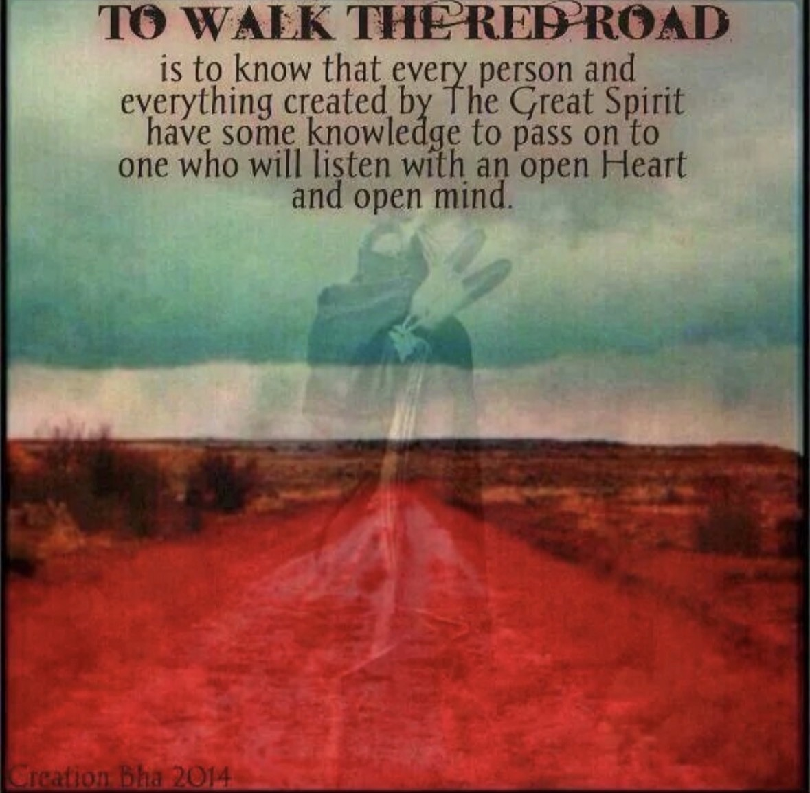
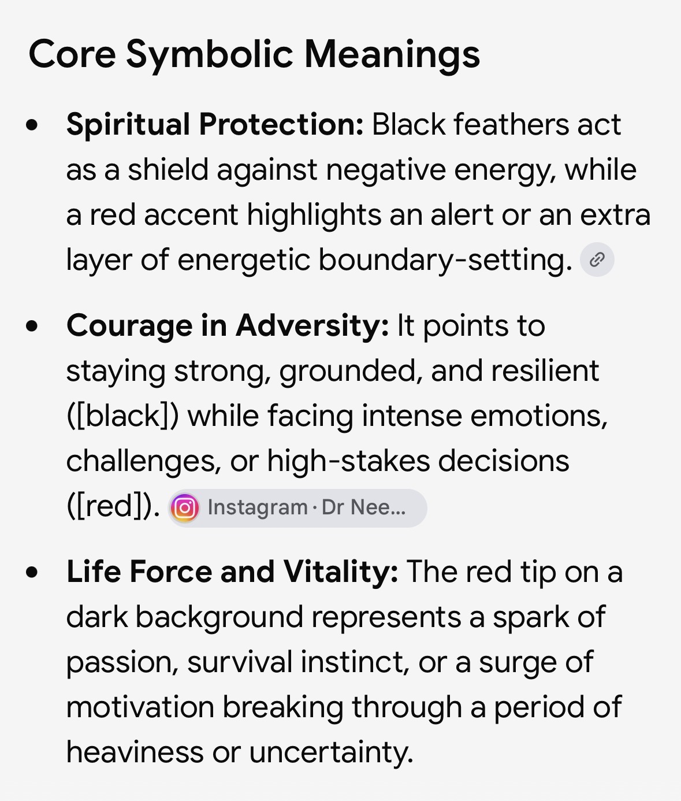

To Walk the Red Road.
The name carries meaning beyond the mats: learning from others, walking with an open heart and mind, meeting adversity with courage, and continuing forward with purpose.

Listen. Learn. Grow.
The material supplied for the school describes the Red Road as recognizing that every person and everything created has knowledge to pass on to someone willing to listen with an open heart and open mind.
That idea translates naturally to Jiu Jitsu: every training partner can teach you something, progress requires humility, and the road is walked one class at a time.
Color With Meaning.
The supplied symbolism describes black as protection and resilience, while red represents alertness, passion, vitality and the energy to move through adversity.
Black · Red · White
The site uses the school’s black, red and gray visual system to make that identity feel intentional rather than decorative. Red is reserved for action, emphasis and forward motion; black gives the design weight and discipline.
Back to Home